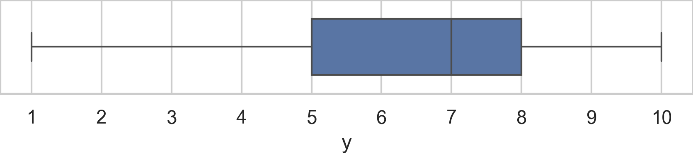
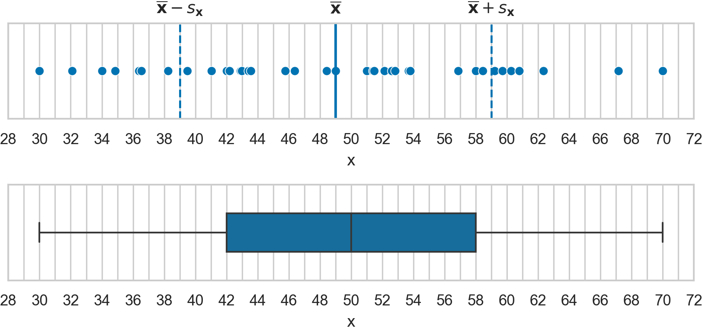

Descriptive statistics exercises#
This notebook contains all solutions of the exercises from Section 1.3 Descriptive Statistics in the No Bullshit Guide to Statistics.
Notebooks setup#
import numpy as np
import pandas as pd
import matplotlib.pyplot as plt
import seaborn as sns
# Figures setup
sns.set_theme(
context="paper",
style="whitegrid",
palette="colorblind",
rc={'figure.figsize': (4,2)},
)
%config InlineBackend.figure_format = 'retina'
# Set pandas precision
pd.set_option("display.precision", 2)
# Simple float __repr__
import numpy as np
if int(np.__version__.split(".")[0]) >= 2:
np.set_printoptions(legacy='1.25')
# Download datasets/ directory if necessary
from ministats import ensure_datasets
ensure_datasets()
datasets/ directory present and ready.
Exercises 1: numerical variables#
E1.16#
Compute the \(\mathbf{mean}\), \(\mathbf{min}\), \(\mathbf{max}\), and
\(\mathbf{range}\) of the effort variable in the students dataset
datasets/students.csv.
#@studentprompt
import pandas as pd
students = pd.read_csv("datasets/students.csv")
efforts = students["effort"]
#@solution
import pandas as pd
students = pd.read_csv("datasets/students.csv")
efforts = students["effort"]
# mean
efforts.mean()
8.904666666666666
#@solution
# min
efforts.min()
5.21
#@solution
# max
efforts.max()
12.0
#@solution
# range
efforts.max() - efforts.min()
6.79
E1.17#
Calculate the first quartile \(\mathbf{Q}_{1}\),
the median \(\mathbf{med}\),
and the third quartile \(\mathbf{Q}_{3}\) of
the effort variable in the students dataset.
#@solution
students = pd.read_csv("datasets/students.csv")
efforts = students["effort"]
efforts.quantile(q=0.25),
(7.76,)
#@solution
efforts.median()
8.69
#@solution
efforts.quantile(q=0.75)
10.350000000000001
E1.18#
Make a one-way frequency table for the effort variable using \([5,7)\),
\([7,9)\), \([9,11)\), and \([11,13)\) as the bin intervals.
#@solution
students = pd.read_csv("datasets/students.csv")
efforts = students["effort"]
bins = [5, 7, 9, 11, 13]
pd.cut(efforts, bins=bins, right=False).value_counts(sort=False)
effort
[5, 7) 2
[7, 9) 6
[9, 11) 5
[11, 13) 2
Name: count, dtype: int64
E1.19#
Consider the following Spear–Tukey box plot of the variable~\(\mathbf{y}\).

Determine the values of the following descriptive statistics: \(\textbf{med}(\mathbf{y})\), \(\textbf{min}(\mathbf{y})\), \(\textbf{max}(\mathbf{y})\), \(\textbf{Q}_{1}(\mathbf{y})\), \(\textbf{Q}_{2}(\mathbf{y})\), \(\textbf{Q}_{3}(\mathbf{y})\), \(\textbf{IQR}(\mathbf{y})\), and \(\textbf{range}(\mathbf{y})\).
We can read off the following statistics from the box plot: \(\mathbf{min}(\mathbf{y})=1\), \(\mathbf{Q}_{1}(\mathbf{y})=5\), \(\mathbf{Q}_{2}(\mathbf{y})=\mathbf{med}(\mathbf{y})=7\), \(\mathbf{Q}_{3}(\mathbf{y})=8\), and \(\mathbf{max}(\mathbf{y})=10\). We can then compute \(\mathbf{IQR}(\mathbf{y})= \mathbf{Q}_{3}(\mathbf{y}) - \mathbf{Q}_{1}(\mathbf{y}) =3\) and \(\mathbf{range}(\mathbf{y}) =\mathbf{max}(\mathbf{y}) - \mathbf{min}(\mathbf{y}) =9\).
E1.20#
We want to summarize the dataset \(\mathbf{x} = (1, 2, 3, 4, 5, 6, 50)\)
by reporting a pair of numbers: one measure of central tendency and one
measure of dispersion.
a) Compute the mean \(\mathbf{mean}(\mathbf{x})\) and the standard deviation
\(\mathbf{std}(\mathbf{x})\).
b) Find the median \(\mathbf{med}(\mathbf{x})\)
and the interquartile range \(\mathbf{IQR}(\mathbf{x})\).
c) Which pair of numbers provides a more faithful summary?
#@studentprompt
import pandas as pd
xs = pd.Series([1, 2, 3, 4, 5, 6, 50], name="x")
# a) compute the mean and the standard deviation
#@solution
xs = pd.Series([1, 2, 3, 4, 5, 6, 50], name="x")
# a)
xs.mean(), xs.std()
(10.142857142857142, 17.65812911408012)
#@studentprompt
# b) compute the median and the interquartile range
#@solution
# b)
xs.median(), xs.quantile(q=0.75)-xs.quantile(q=0.25)
(4.0, 3.0)
c) The median and the interquartile range are the better summary statistics in this case, because they are not as affected by the outlier \(x=50\).
Exercises 2: two numerical variables#
E1.21#
in the relationship between the age variable
and the time variable in the players dataset.
a) Draw a scatter plot of time versus age.
b) Calculate the covariance \(\mathbf{cov}(\texttt{age},\texttt{time})\).
c) Calculate the correlation coefficient \(\mathbf{corr}(\texttt{age},\texttt{time})\).
d) Interpret the correlation coefficient. Is this a causal relationship?
#@studentprompt
players = pd.read_csv("datasets/players.csv")
#@solution
players = pd.read_csv("datasets/players.csv")
# a)
sns.scatterplot(data=players, x="age", y="time");
{kind=link}
#@solution
# b)
players[["age","time"]].cov()
| age | time | |
|---|---|---|
| age | 204.02 | -931.53 |
| time | -931.53 | 16348.66 |
The covariance is \(\mathbf{cov}(\texttt{age},\texttt{time})=-931.53\), which is the value we see in the top-right corner. Note \(\mathbf{cov}(\texttt{time},\texttt{age})\) in the bottom-left corner has the same value. This is because the covariance formula $\( \mathbf{cov}(\mathbf{x},\mathbf{y}) = \tfrac{1}{n-1}\!\sum^n_{i=1}(x_i- \overline{\mathbf{x}} )(y_i- \overline{\mathbf{y}}). \)\( is symmetric in the inputs \)\mathbf{x}\( and \)\mathbf{y}$.
#@solution
# c)
players[["age","time"]].corr()
| age | time | |
|---|---|---|
| age | 1.00 | -0.51 |
| time | -0.51 | 1.00 |
The correlation coefficient is \(\mathbf{corr}(\texttt{age},\texttt{time}) = -0.51\).
d) We see age is negatively associated with time: older the players are, the less time they spend in the game, on average.
The relationship should not be interpreted as causal
because the data is observational.
Exercises 3: comparing two groups of numerical variables#
E1.22#
Compare the electricity prices between the East and West locations in
the electricity prices dataset
datasets/eprices.csv.
a) Generate combined strip plot for the two groups.
b) Compute the mean for each group.
#@solution
eprices = pd.read_csv("datasets/eprices.csv")
# a) scatter plot
sns.stripplot(data=eprices, x="price", y="loc");
{kind=link}
#@solution
# b)
eprices[eprices["loc"]=="West"]["price"].mean()
9.155555555555557
#@solution
eprices[eprices["loc"]=="East"]["price"].mean()
6.155555555555556
E1.23#
The doctors dataset has the categorical variable loc that represents the location
with two possible values rur and urb.
Compare the score variable between the rur and urb groups of doctors.
a) Generate parallel strip plots.
b) Generate parallel box plots.
c) Generate separate histograms for the two groups.
d) Compute the descriptive statistics for the two groups.
#@studentprompt
doctors = pd.read_csv("datasets/doctors.csv")
#@solution
doctors = pd.read_csv("datasets/doctors.csv")
# a) strip plots
sns.stripplot(data=doctors, x="score", y="loc");
{kind=link}
#@solution
# b) box plots
sns.boxplot(data=doctors, x="score", y="loc", hue="loc");
{kind=link}
#@solution
# c) histogram for urb doctors
bins = range(0,100,10)
urb_doctors = doctors[doctors["loc"]=="urb"]
sns.histplot(data=urb_doctors, x="score", bins=bins);
{kind=link}
#@solution
# c) histogram for rur doctors
rur_doctors = doctors[doctors["loc"]=="rur"]
sns.histplot(data=rur_doctors, x="score", bins=bins, color="C1");
{kind=link}
#@solution
# d) descriptive statistics
urb_doctors = doctors[doctors["loc"]=="urb"]
urb_doctors["score"].describe()
count 110.00
mean 45.96
std 20.22
min 4.00
25% 30.25
50% 46.00
75% 59.50
max 88.00
Name: score, dtype: float64
#@solution
rur_doctors = doctors[doctors["loc"]=="rur"]
rur_doctors["score"].describe()
count 46.00
mean 52.96
std 20.36
min 5.00
25% 37.25
50% 56.50
75% 63.75
max 97.00
Name: score, dtype: float64
Exercises 4: categorical variables#
E1.24#
Compute frequencies and relative frequencies for the curriculum variable. Display the results in a one-way table.
#@solution
students["curriculum"].value_counts()
curriculum
debate 8
lecture 7
Name: count, dtype: int64
#@solution
students["curriculum"].value_counts(normalize=True)
curriculum
debate 0.53
lecture 0.47
Name: proportion, dtype: float64
E1.25#
Make a bar chart displaying the frequencies of the curriculum variable.
#@solution
sns.countplot(data=students, x="curriculum");
{kind=link}
E1.26#
What is the mode for variable curriculum in the students dataset?
How many times does the modal value occur in the curriculum data?
The easiest way to answer these question is to
use the metho .describe() on the curriculum variable.
#@solution
students["curriculum"].describe()
count 15
unique 2
top debate
freq 8
Name: curriculum, dtype: object
This summary tells us that the variable curriculum has:
15 values (\(n=15\)) in total
two possible values (
debateandlecture)the
top(most frequent) valuedebatethe frequency of the top value is
8
Another way to find the mode,
is to call the .mode() method.
#@solution
mode = students["curriculum"].mode()
mode
0 debate
Name: curriculum, dtype: str
To find the frequency of the mode value,
we can use .value_counts() and select
the count that corresponds to the mode in the results.
#@solution
students["curriculum"].value_counts()[mode]
curriculum
debate 8
Name: count, dtype: int64
Exercises 5: two categorical variables#
E1.27#
The doctors dataset
(datasets/doctors.csv)
contains the categorical variables loc (urb or rur) and work
(cli, eld, or hos).
a) Compute a two-way table for the variables work and loc.
b) Generate a grouped bar plot of work and loc.
c) Generate a stacked bar plot of work and loc.
#@studentprompt
doctors = pd.read_csv("datasets/doctors.csv")
#@solution
doctors = pd.read_csv("datasets/doctors.csv")
# a)
pd.crosstab(index=doctors["work"],
columns=doctors["loc"],
margins=True)
| loc | rur | urb | All |
|---|---|---|---|
| work | |||
| cli | 32 | 56 | 88 |
| eld | 5 | 21 | 26 |
| hos | 9 | 33 | 42 |
| All | 46 | 110 | 156 |
#@solution
# b) grouped bar plot
sns.countplot(data=doctors, x="work", hue="loc");
{kind=link}
#@solution
# c) stacked bar plot
sns.histplot(data=doctors, x="work", shrink=0.7,
hue="loc", multiple="stack");
{kind=link}
E1.28#
Load the visitors dataset (datasets/visitors.csv).
a) Compute a two-way table of the variables version and bought.
b) Generate a grouped bar plot of version and bought.
c) Use pd.crosstab to compute the conditional relative frequency of bought=1 for the two versions: \(\mathbf{relfreq}_{\texttt{1}|\texttt{A}}\) and
\(\mathbf{relfreq}_{\texttt{1}|\texttt{B}}\).
#@studentprompt
visitors = pd.read_csv("datasets/visitors.csv")
# pd.crosstab( ... )
#@solution
visitors = pd.read_csv("datasets/visitors.csv")
# a)
pd.crosstab(index=visitors["version"],
columns=visitors["bought"],
margins=True)
| bought | 0 | 1 | All |
|---|---|---|---|
| version | |||
| A | 880 | 61 | 941 |
| B | 1019 | 40 | 1059 |
| All | 1899 | 101 | 2000 |
#@solution
# b)
sns.countplot(data=visitors, x="version", hue="bought");
{kind=link}
#@solution
# c) conditional relative frequencies
pd.crosstab(index=visitors["version"],
columns=visitors["bought"],
normalize="index", margins=True)
| bought | 0 | 1 |
|---|---|---|
| version | ||
| A | 0.94 | 0.06 |
| B | 0.96 | 0.04 |
| All | 0.95 | 0.05 |
The conversion rate for version A is
\(\mathbf{relfreq}_{\texttt{1}|\texttt{A}}=0.06\),
and for version B it is \(\mathbf{relfreq}_{\texttt{1}|\texttt{B}}=0.04\).
Exercises (end of section)#
E1.29#
Calculate the mean and the standard devoatopm
of the variable score variable
in the doctors dataset.
#@solution
doctors = pd.read_csv("datasets/doctors.csv")
doctors["score"].describe()
count 156.00
mean 48.03
std 20.45
min 4.00
25% 33.00
50% 49.50
75% 62.00
max 97.00
Name: score, dtype: float64
E1.30#
A research paper includes these graphs for the variable \(\mathbf{x}\).

The paper authors forgot to include the summary statistics for the variable \(\mathbf{x}\). Use the graphs to determine the the values of the following descriptive statistics: \(\textbf{mean}(\mathbf{x})\), \(\textbf{med}(\mathbf{x})\), \(\textbf{std}(\mathbf{x})\), \(\textbf{var}(\mathbf{x})\), \(\textbf{min}(\mathbf{x})\), \(\textbf{Q}_{1}(\mathbf{x})\), \(\textbf{Q}_{2}(\mathbf{x})\), \(\textbf{Q}_{3}(\mathbf{x})\), \(\textbf{max}(\mathbf{x})\), \(\textbf{IQR}(\mathbf{x})\), \(\textbf{range}(\mathbf{x})\).
We can read off the \(\mathbf{mean}(\mathbf{x}) = 49\) and \(\mathbf{std}(\mathbf{x})=10\) from the annotations on the scatter plot, and compute \(\mathbf{var}(\mathbf{x})=100\).
We can then obtain the five point summary from the box plot:
\(\mathbf{min}(\mathbf{x}) = 30\)
\(\mathbf{Q}_{1}(\mathbf{x}) = 42\)
\(\mathbf{Q}_{2}(\mathbf{x}) = \mathbf{med}(\mathbf{x})=50\)
\(\mathbf{Q}_{3}(\mathbf{x})= 58\)
\(\mathbf{max}(\mathbf{x}) = 70\)
From these, we can compute \(\mathbf{IQR}(\mathbf{x}) = 16\) and \(\mathbf{range}(\mathbf{x}) = 40\).